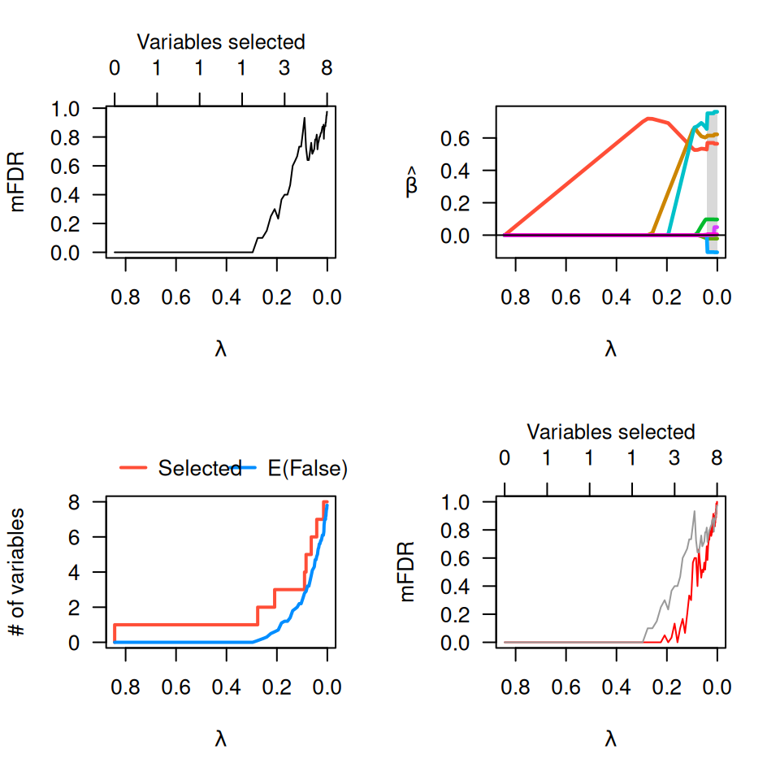

Fits multiple penalized regression models in which the outcome is randomly permuted, thereby allowing estimation of the marginal false discovery rate.
Usage
perm.ncvreg(
X,
y,
...,
permute = c("outcome", "residuals"),
N = 10,
seed,
trace = FALSE
)Arguments
- X
The design matrix, without an intercept, as in
ncvreg.- y
The response vector, as in
ncvreg.- ...
Additional arguments to
ncvreg.- permute
What to permute. If
'outcome', the response vector,y, is permuted. If'residuals', the residuals are permuted. This is only available for linear regression (i.e., forfamily='gaussian'). Note that permuting the residuals may take a long time, as the residuals differ for each value oflambda, so separate permutations are required at every value oflambda. See alsopermres().- N
The number of permutation replications. Default is 10.
- seed
You may set the seed of the random number generator in order to obtain reproducible results.
- trace
If set to TRUE, perm.ncvreg will inform the user of its progress by announcing the beginning of each permutation fit. Default is FALSE.
Value
An object with S3 class "perm.ncvreg" containing:
- EF
The number of variables selected at each value of
lambda, averaged over the permutation fits.- S
The actual number of selected variables for the non-permuted data.
- mFDR
The estimated marginal false discovery rate (
EF/S).- fit
The fitted
ncvregobject for the original (non-permuted) data.- loss
The loss/deviance for each value of
lambda, averaged over the permutation fits. This is an estimate of the explanatory power of the model under null conditions, and can be used to adjust the loss of the fitted model in a manner akin to the idea of an adjusted R-squared in classical regression.
Details
The function fits a penalized regression model to the actual data, then
repeats the process N times with a permuted version of the response
vector. This allows estimation of the expected number of variables included
by chance for each value of lambda. The ratio of this expected
quantity to the number of selected variables using the actual (non-permuted)
response is called the marginal false discovery rate (mFDR).
Author
Patrick Breheny patrick-breheny@uiowa.edu
Examples
# Linear regression --------------------------------------------------
data(Prostate)
pmfit <- perm.ncvreg(Prostate$X, Prostate$y)
op <- par(mfcol=c(2,2))
plot(pmfit)
plot(pmfit, type="EF")
plot(pmfit$fit)
lam <- pmfit$fit$lambda
pmfit.r <- perm.ncvreg(Prostate$X, Prostate$y, permute='residuals')
plot(pmfit.r, col="red") # Permuting residuals is
lines(lam, pmfit$mFDR, col="gray60") # less conservative

par(op)
# Logistic regression ------------------------------------------------
data(Heart)
pmfit <- perm.ncvreg(Heart$X, Heart$y, family="binomial")
op <- par(mfcol=c(2,2))
plot(pmfit)
plot(pmfit, type="EF")
plot(pmfit$fit)
par(op)